Wristband task delivery with a phone app and web dashboard
NEXT STEPInspect the installation area✓ DONE
1Dispatch vibrates on arrival
2Display step shown on band
3Execute hands on the work
4Confirm · tap DONE
5Next next step arrives
● Work in progress: voice entry and vibration alerts are in hardware assembly; no measured results yet.
Team E. Tuvshinzaya · N. Sanchirbayar · G. Erdene · Mentor U. Anujin New Mongol College of Technology, Mongolia · Reg. No. 10083
1What BandFlow is
A boss creates a piece of work. It is split into ordered steps, and only the current step is sent to the assigned worker’s wristband over Bluetooth. The worker taps DONE, the next step arrives, and the boss sees progress update live.
Boss and worker accountsOne step at a timeLive progressWristband + app + web
2Who uses it
Boss
Creates work with priority, due date and steps
Picks the worker, or several workers
Sees team progress and worker status
Deletes work or a single step
Resets a worker’s forgotten password
Worker
Sees assigned work and each step’s status
Ticks steps in the app
Links a wristband with a 6-digit code
On the band: matrix, works, steps, DONE, remove a step
Edits profile and password
3How it works
The core loop
1SUPERVISORAssign
Creates work in the app with priority and due date, picks the worker(s)
2AI / SERVERBreak down
Ordered steps with prerequisites; the server validates them
3SERVERQueue
First ready step becomes active; dependent steps stay locked
4WRISTBANDDeliver
Sent over Bluetooth to that worker’s linked band; it vibrates and shows the step
5WORKERConfirm
Taps DONE on the band, or ticks the step in the app
6SERVERAdvance
Saves progress, unlocks and sends the next step, updates the dashboard
Steps 4 to 6 repeat until all steps are done. Example: “Install electrical equipment”1 Inspect the installation area2 Prepare the required tools3 Run the cable4 Fit the equipment5 Test the circuit6 Record the result
4System architecture
For specialists
AI service (optional)Steps + priority class, as JSON
AI reply is validated by the server before saving (invalid steps and circular dependencies are rejected). Priority: AI classifier, or rules: urgent = due within 2 days, important = above Low priority.
TypeScriptReact Native · ExpoReact · ViteNode.jsSQLitePython · Flask · BleakArduino C++ · LVGL · NimBLEESP32-S3Bluetooth LEWhisper APIAI and Whisper need internet; the rest runs on the local network.
5The wristband
Hardware
ESP32-S3 + touch320×170 screen, DONE and menus
Electret micRecords voice for task entry
Vibration motorAlerts a new step
Battery + chargerRechargeable, charger module
Bluetooth LELink to the Pi bridge
Account link6-digit code, one band per worker
LINK THIS BAND
482 916
Enter it in the app: Settings › Wristband
Pairing
PRIORITY MATRIX
DO FIRST2
SCHEDULE3
DELEGATE1
ELIMINATE0
Matrix
TASK · ON THE WATCH
03:12
Prepare the required tools
✓ DONE
Current step
Screens drawn from the firmware design (example numbers). The band can also remove a step and unlink itself.
6Voice task entry
Final hardware stage
1SpeakElectret microphone on the ESP32-S3 records a short clip
2SendThe clip travels over Bluetooth to the Raspberry Pi
3TranscribeThe Pi sends the audio to the Whisper API and gets text back
4ConfirmThe text appears on the band’s screen to check
5CreateNode saves the task, steps are built, and the first one is dispatched
7Priority matrix
App + band
URGENT
NOT URGENT
IMPORTANT
DO FIRSTDue within 2 days or overdue, priority above Low
SCHEDULEImportant, not due soon
MINOR
DELEGATEUrgent, low priority
ELIMINATELow priority, not urgent
AI classifier when connected, else these rules. Band shows counts.
8What makes it different
Wristband as interfaceOne step at a time, tap to confirm
Account-linked bandSteps go only to that worker’s band
Dependency-aware queueLater steps stay locked until ready
Matrix on the wristBrowse quadrants, works and steps
Voice task entrySpeak to the band; Whisper transcribes
Offline-tolerantWork saved if the band is away; events queued
Accounts and rolesBoss and worker login, password reset, worker status
One backendApp and web share one API and database
9Dependency locking
Per task
DONEInspect area
›
DONEPrepare tools
›
ACTIVE · ON BANDRun the cable
›
LOCKEDFit equipment
›
LOCKEDTest circuit
Only the active step is sent to the band.
A step unlocks when its prerequisite is done; loops are rejected.
Work can go to several workers; each gets steps on their own band.
10Interfaces: app & dashboard
Mobile app real screenshots
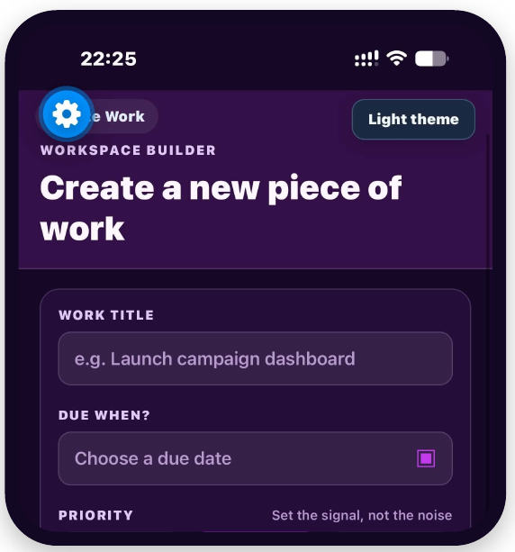
Create work
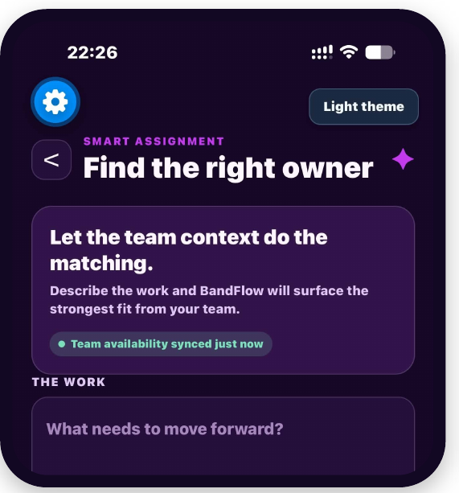
Assign work
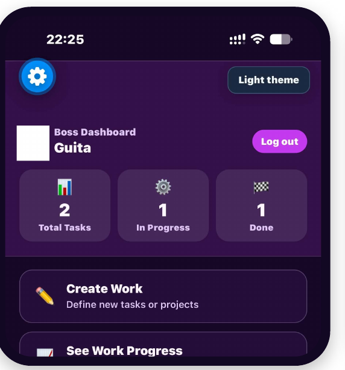
Boss dashboard
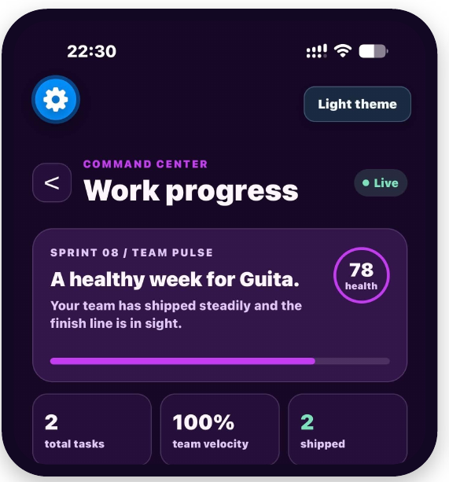
Work progress
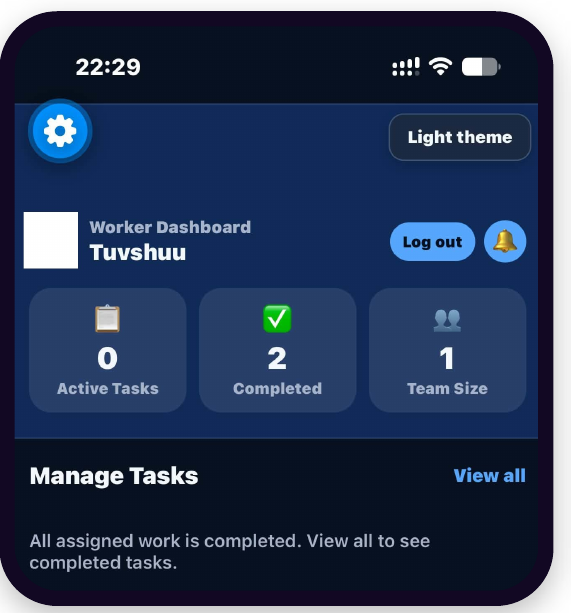
Worker dashboard
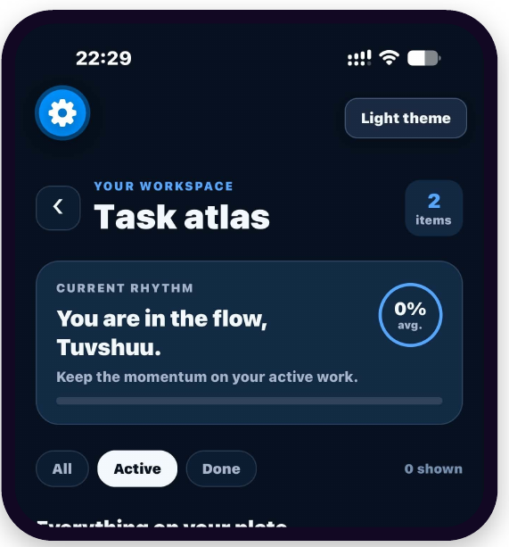
Task atlas
Web dashboard real screenshots
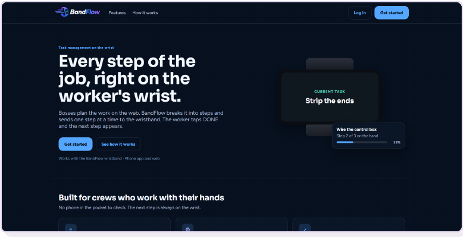
Landing page
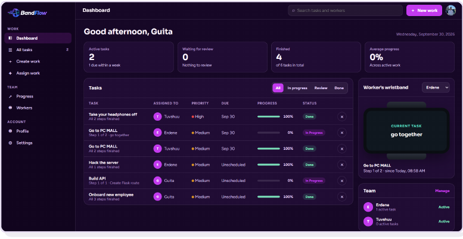
Dashboard
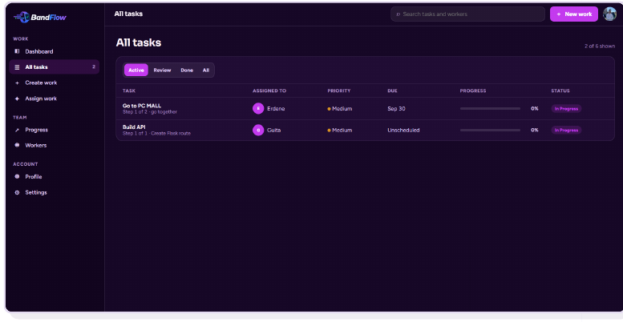
All tasks
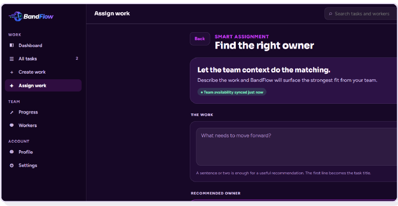
Assign work
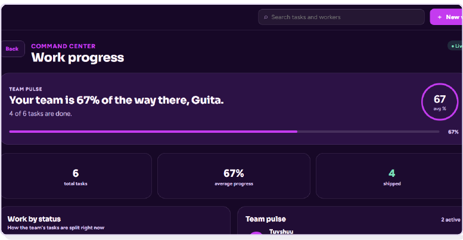
Work progress
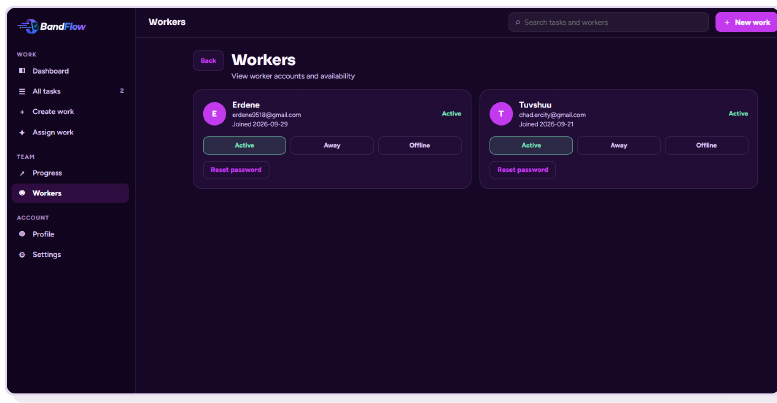
Workers & availability
11Project status
BuiltAccounts and roles · work, steps and dependencies · progress · step delivery and DONE over BLE · band pairing · priority matrix · app, web and wristband screens · event queue
In progressVoice task entry · vibration alerts · battery and charging · optional AI service connection
BandFlowOne sentence: BandFlow turns a big task into ordered steps, delivers them one at a time to a linked wristband, and shows confirmed progress on a shared dashboard.